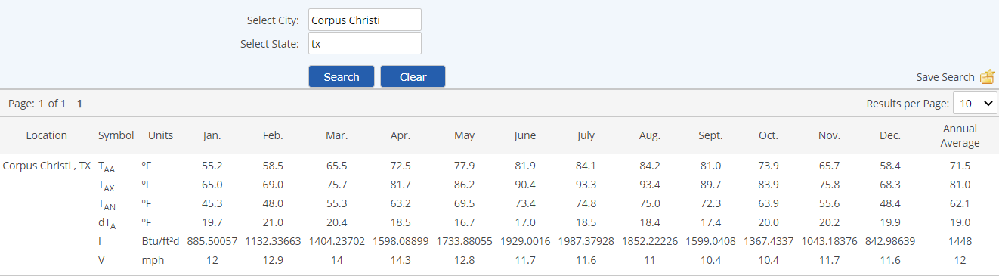

A pre-defined global database of meteorological data for US cities is available for use in Material Activity calculations and Material Formula Based Properties (FBPs).
In order to use meteorological data, a location must be specified on a parent object of the Material Activity Calculated requirement. The Location may be specified on any parent object (direct parent or higher), as the location is inherited. The meteorological data for the location is available for use in all Material Activity calculations under the parent hierarchy.
The meteorological data table may be viewed and searched from the Material Activity menu.
To view meteorological data in the system:
Meteorological data for approximately 300 U.S. cities is available.

The meteorological data table includes the following data for each location:
The annual values use the suffix "_ann" with the property name. In the calculation definition, Met_Taa gets the average ambient temperature for the location for the month of data entry. Met_Taa_ann gets the average annual ambient temperature for the location.
Annual values may be used in Secondary FBPs, since only the location is required to obtain the value from the table. To use monthly values, a Tertiary FBP is required, since the data entry date/time is required, in addition to the location, in order to obtain the correct monthly value.
Temperature data is in degrees Fahrenheit. Material formula-based properties can be used to perform the conversion to Centigrade or Rankine.
The Met Data that will be used in a calculation is dependent on the End Date of a Material Data Line. For more explanation, see Material Data Lines and Data Batches.